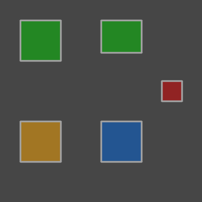

Evaluation¶
How good are the predictions? HiReS answers this by pairing every predicted polygon with a ground-truth polygon and counting what is left over. This page explains the pairing, defines every metric derived from it, and shows how to inspect individual objects.
All functions live in hires.metrics and take
the ground truth first and the predictions second.
The example¶
The examples use one small image with four ground-truth objects, two of class 0 (top row) and two of class 1 (bottom row), and four predictions that contain every kind of mistake:
>>> from shapely.geometry import box
>>> import hires
>>> gt = hires.Collection(
... [
... hires.Annotation(0, box(0.10, 0.10, 0.30, 0.30)),
... hires.Annotation(0, box(0.50, 0.10, 0.70, 0.30)),
... hires.Annotation(1, box(0.10, 0.60, 0.30, 0.80)),
... hires.Annotation(1, box(0.50, 0.60, 0.70, 0.80)),
... ],
... name="scan",
... image_size=(400, 400),
... )
>>> pred = hires.Collection(
... [
... hires.Annotation(0, box(0.10, 0.10, 0.30, 0.30), confidence=0.95), # exact
... hires.Annotation(0, box(0.50, 0.10, 0.70, 0.26), confidence=0.80), # too small
... hires.Annotation(0, box(0.10, 0.60, 0.30, 0.80), confidence=0.70), # wrong class
... hires.Annotation(1, box(0.80, 0.40, 0.90, 0.50), confidence=0.40), # not an object
... ],
... name="scan",
... image_size=(400, 400),
... )
The fourth ground-truth object has no prediction at all. Drawn on an empty
canvas with hires.plot.comparison,
the situation looks like this (green: correct, orange: wrong class, red:
false positive, blue: missed):
>>> import numpy as np
>>> canvas = np.full((400, 400, 3), 70, dtype=np.uint8)
>>> _ = hires.plot.comparison(
... canvas, hires.metrics.match(gt, pred), save="evaluation_comparison.png"
... )

Matching¶
hires.metrics.match pairs polygons by
intersection-over-union,
computed on the polygons themselves, not on their bounding boxes:
>>> round(hires.metrics.iou(gt[1], pred[1]), 2)
0.8
>>> hires.metrics.iou_matrix(gt, pred).round(2)
array([[1. , 0. , 0. , 0. ],
[0. , 0.8, 0. , 0. ],
[0. , 0. , 1. , 0. ],
[0. , 0. , 0. , 0. ]])
The matrix has one row per ground-truth object and one column per prediction. Matching then proceeds in three steps:
- All pairs with \(\text{IoU} \ge t\) are candidates. The threshold \(t\) is
iou_threshold,0.5by default. - Candidates are accepted greedily in order of decreasing IoU. Once an object is part of a match it is not available again, so the matching is one-to-one.
- Whatever remains unmatched becomes a false negative (ground truth) or a false positive (prediction).
>>> matches = hires.metrics.match(gt, pred)
>>> matches
MatchResult(iou_threshold=0.5, tp=2, misclassified=1, fp=1, fn=1)
>>> matches.counts()
{'tp': 2, 'misclassified': 1, 'fp': 1, 'fn': 1}
Every object ends up in exactly one Match with one
of four statuses:
| Status | Ground truth | Prediction | Meaning |
|---|---|---|---|
tp |
✓ | ✓ | Found, with the right class |
misclassified |
✓ | ✓ | Found, with the wrong class |
fp |
– | ✓ | A prediction where there is no object |
fn |
✓ | – | An object the model missed |
>>> for m in matches:
... print(f"{m.status:14} iou={m.iou:.2f} gt={m.gt_index} pred={m.pred_index}")
tp iou=1.00 gt=0 pred=0
misclassified iou=1.00 gt=2 pred=2
tp iou=0.80 gt=1 pred=1
fn iou=0.00 gt=3 pred=None
fp iou=0.00 gt=None pred=3
The IoU threshold¶
A stricter threshold demands better outlines. At 0.9 the prediction that
is too small no longer counts as a match, and turns into one missed object
plus one false positive:
>>> hires.metrics.match(gt, pred, iou_threshold=0.9).counts()
{'tp': 1, 'misclassified': 1, 'fp': 2, 'fn': 2}
iou_threshold |
Asks |
|---|---|
0.5 |
Was the object found? The conventional default. |
0.7–0.8 |
Is the outline good enough to measure? Use this when the downstream analysis is morphometric. |
0.9 and above |
Rarely meaningful: two careful human annotators often agree less than that on small objects. |
Class-agnostic and class-aware matching¶
By default, matching ignores the class: an object that was outlined
correctly but labelled wrongly is one misclassified match. This separates
localisation errors from classification errors.
With class_aware=True only polygons of the same class may match, so the
same object yields one fn and one fp:
>>> hires.metrics.match(gt, pred, class_aware=True).counts()
{'tp': 2, 'misclassified': 0, 'fp': 2, 'fn': 2}
The metrics below are the same either way; only the bookkeeping differs.
Working with the result¶
match returns a MatchResult, an immutable
sequence of matches that can be indexed, filtered and tabulated:
>>> first = matches[0]
>>> first.status, first.iou, first.gt.class_id, first.pred.confidence
('tp', 1.0, 0, 0.95)
>>> matches.with_status("fp", "fn")
MatchResult(iou_threshold=0.5, tp=0, misclassified=0, fp=1, fn=1)
>>> matches.filter(lambda m: m.iou > 0.9)
MatchResult(iou_threshold=0.5, tp=1, misclassified=1, fp=0, fn=0)
summary returns the overall numbers as a dict:
>>> summary = matches.summary()
>>> summary["n_gt"], summary["n_pred"]
(4, 4)
>>> round(summary["precision"], 2), round(summary["recall"], 2), round(summary["f1"], 2)
(0.5, 0.5, 0.5)
>>> round(summary["mean_iou"], 2)
0.93
to_frame gives one row per match.
Row i describes matches[i]; fields of a missing object are empty:
>>> names = {0: "pulex", 1: "galeata"}
>>> table = matches.to_frame(class_names=names)
>>> table[["status", "iou", "gt_class_name", "pred_class_name", "pred_confidence"]]
status iou gt_class_name pred_class_name pred_confidence
0 tp 1.0 pulex pulex 0.95
1 misclassified 1.0 galeata pulex 0.70
2 tp 0.8 pulex pulex 0.80
3 fn 0.0 galeata None NaN
4 fp 0.0 None galeata 0.40
The table also holds the nine traits of both objects, as gt_* and
pred_* columns:
>>> table[["status", "gt_area", "pred_area"]]
status gt_area pred_area
0 tp 6400.0 6400.0
1 misclassified 6400.0 6400.0
2 tp 6400.0 5120.0
3 fn 6400.0 NaN
4 fp NaN 1600.0
Metrics¶
Precision, recall and F1¶
Precision is the fraction of predictions that are correct; recall is the
fraction of objects that were found; F1 is their harmonic mean. A metric
whose denominator is zero is reported as 0.0.
A misclassified pair is both an error of the ground-truth class,
which lost an object (FN), and of the predicted class, which gained a wrong
one (FP).
The detection report¶
>>> report = hires.metrics.detection_report(gt, pred, class_names=names)
>>> report[["class_name", "tp", "fp", "fn", "precision", "recall", "f1"]].round(2)
class_name tp fp fn precision recall f1
class_id
all all 2 2 2 0.50 0.5 0.5
0 pulex 2 1 0 0.67 1.0 0.8
1 galeata 0 1 2 0.00 0.0 0.0
>>> report[["class_name", "ap50", "ap50_95"]].round(2)
class_name ap50 ap50_95
class_id
all all 0.5 0.42
0 pulex 1.0 0.85
1 galeata 0.0 0.00
Reading the row of class 0: two of its objects were found (tp); a third
prediction of class 0 is really a class 1 object (fp); nothing of class 0
was missed (fn). Class 1 has no correct prediction at all.
| Column | Content |
|---|---|
tp, fp, fn |
Counts at iou_threshold |
precision, recall, f1 |
Derived from the counts |
ap50 |
Average precision at IoU 0.5 |
ap50_95 |
Average precision, averaged over IoU 0.50, 0.55, …, 0.95 |
In the "all" row the counts are summed over the classes and precision,
recall and F1 are computed from the sums (a micro average, dominated by
frequent classes), while ap50 and ap50_95 are the unweighted mean over
classes (mAP, a macro average).
Average precision¶
Precision and recall describe the model at one confidence threshold. Average precision (AP) summarises all thresholds: the predictions of a class are ranked by confidence, precision and recall are computed for every prefix of the ranking, and AP is the area under the resulting precision-recall curve, using all-point interpolation.
>>> hires.metrics.average_precision(gt, pred, iou_threshold=0.5).round(2)
class_id
0 1.0
1 0.0
Name: ap@0.5, dtype: float64
>>> hires.metrics.average_precision(gt, pred, iou_threshold=0.9).round(2)
class_id
0 0.5
1 0.0
Name: ap@0.9, dtype: float64
ap50_95 repeats this for ten IoU thresholds and averages, which rewards
accurate outlines, not only found objects.
Difference from COCO
HiReS matches polygons once, greedily by IoU and independently of confidence, and ranks afterwards. In the COCO protocol, predictions claim ground truth in order of confidence. The two agree unless several predictions compete for the same object, so values are close to, but not necessarily identical with, those printed by Ultralytics.
AP is only meaningful when the predictions were made with a low confidence threshold. Predictions that the model discarded cannot be ranked, and the curve stops early.
Confusion matrix¶
>>> hires.metrics.confusion_matrix(gt, pred, class_names=names)
pred pulex galeata background
gt
pulex 2 0 0
galeata 1 0 1
background 0 1 0
Rows are the ground-truth class and columns the predicted class. The extra
background row and column collect the unmatched objects: the missed
object is in the background column (an object predicted as nothing),
the false positive in the background row (nothing predicted as an
object).
Choosing a confidence threshold¶
The confidence threshold trades precision against recall.
precision_recall_curve tells how
the model would score if only predictions with at least a given confidence
were kept:
>>> curve = hires.metrics.precision_recall_curve(gt, pred)
>>> curve.round(2)
confidence precision recall f1
0 0.95 1.00 0.25 0.40
1 0.80 1.00 0.50 0.67
2 0.70 0.67 0.50 0.57
3 0.40 0.50 0.50 0.50
Keeping only predictions with a confidence of 0.8 or more gives perfect precision but finds half of the objects; lowering the threshold further only adds mistakes. The row with the highest F1 is a reasonable default:
Pick a higher threshold if false positives are costly (they contaminate
trait distributions) and a lower one if missed objects are (they bias
counts). Apply it at inference (confidence=) or afterwards, without a
second model run:
>>> hires.metrics.match(gt, pred.filter_confidence(0.8)).counts()
{'tp': 2, 'misclassified': 0, 'fp': 0, 'fn': 2}
For a real model, segment a validation set with a low threshold first, so the curve covers the whole range:
>>> pred = hires.run_pipeline( # doctest: +SKIP
... "validation/", "model.pt", "low_conf/", confidence=0.05
... )
Use class_id= for the curve of a single class. Evaluate on full
images processed by the tiled pipeline, not on the validation tiles used
during training: only the former measures what you will get in production.
Datasets¶
Everything above works unchanged for two Album objects.
Collections are paired by name, which for albums read from disk is the
file stem of the label file:
>>> gt_album = hires.Album([gt, gt.replace(name="scan_2")])
>>> pred_album = hires.Album([pred, pred.replace(name="scan_3")])
>>> matches = hires.metrics.match(gt_album, pred_album)
>>> matches.images
['scan']
>>> matches.unpaired_gt, matches.unpaired_pred
(('scan_2',), ('scan_3',))
Collections that exist on only one side are skipped and reported, as
above; pass strict=True to raise an error instead. An image without
objects still needs an (empty) label file on both sides; otherwise its
false positives go unnoticed.
Select the matches of one image with for_image:
Different class schemas
If ground truth and predictions number their classes differently, translate one side first; see Translating class ids.
A full report in one call¶
hires.evaluate computes all of the above, writes it to
a directory and returns the detection report:
>>> report = hires.evaluate(gt, pred, "evaluation", class_names=names, save_images=False)
>>> from pathlib import Path
>>> sorted(path.name for path in Path("evaluation").iterdir())
['confusion_matrix.csv', 'confusion_matrix.png', 'detection_report.csv', 'matches.csv', 'precision_recall.csv', 'precision_recall.png']
With save_images=True, the default, it also writes one comparison image
per scan whose image file is known. The usual call reads both sides from
disk:
>>> gt = hires.read_album("labels/", image_dir="scans/") # doctest: +SKIP
>>> pred = hires.read_album("results/", image_dir="scans/") # doctest: +SKIP
>>> report = hires.evaluate(gt, pred, "evaluation/") # doctest: +SKIP
The files are described in Output files.
Inspecting individual objects¶
Numbers say how often the model is wrong; pictures say why. To look at one
object, select its match. pick returns a representative example of a
status:
>>> matches = hires.metrics.match(gt, pred)
>>> typical = matches.pick("tp") # the true positive with the median IoU
>>> typical.pred_index, round(typical.iou, 2)
(0, 1.0)
>>> worst = matches.pick("tp", by="worst_iou")
>>> worst.pred_index, round(worst.iou, 2)
(1, 0.8)
find returns the match of a specific object, identified by the number
drawn next to it in an overlay:
>>> found = matches.find(pred_index=2)
>>> found.status, found.gt.class_id, found.pred.class_id
('misclassified', 1, 0)
Pass a match to hires.plot.individual to
see both outlines side by side.
Trait agreement¶
Detection metrics say whether objects are found; for morphometrics it also matters whether the measurements agree. The match table holds the traits of both objects of every pair, so agreement is a few lines of pandas:
>>> pairs = matches.with_status("tp").to_frame()
>>> ratio = pairs["pred_area"] / pairs["gt_area"]
>>> ratio.round(2).tolist()
[1.0, 0.8]
>>> round(float(ratio.median()), 2)
0.9
A median ratio away from one indicates a systematic offset, for example
halos included in the predicted masks. A constant offset can be corrected
with a constant factor; a low correlation between pred_area and gt_area
cannot.
Give both sides the same physical scale with
with_scale before matching to obtain the
traits in physical units.
The legacy module hires.analysis draws
distribution, bias, Bland-Altman, Taylor and target diagrams from the same
table. It needs the analysis extra and is scheduled to be replaced.
See also¶
- Reference:
hires.metrics,hires.plot - Visualisation